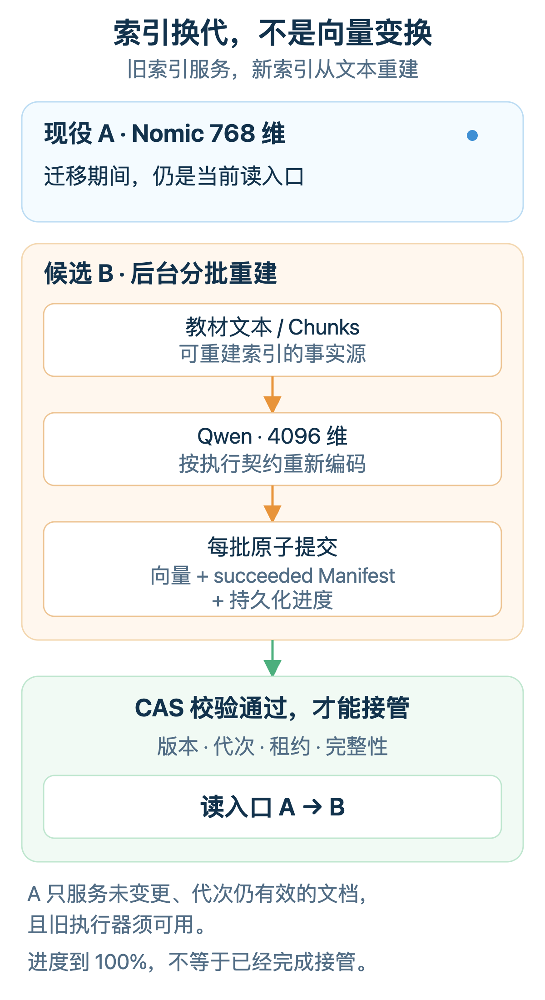
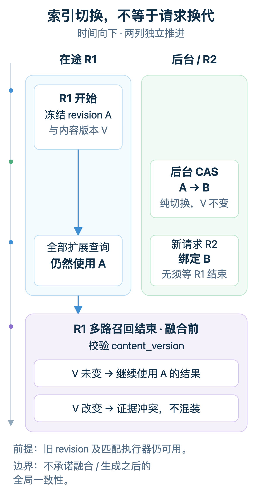

给知识库的向量检索换一个 Embedding 模型，听上去不过是改个配置：模型名换掉，维度改一改，重启。可知识库里一旦躺着一本真实的教材，事情就没这么轻巧了。
在开发河蟹 AI（HexClaw）v0.5.0 的 K12 家长辅导功能时，知识库不再只是“上传几份资料”。孩子档案会关联具体教材，再把当前单元和页码范围一起交给辅导链路。其中有一本 131 页的《数学五年级下册.pdf》，当前范围是第四单元、第 45～62 页；生成同步练习、提供辅导依据，都得回到这份教材里找证据。
也就在这轮版本迭代里，我们把本地知识索引的内置默认 Embedding 从 nomic-embed-text 换成了 Ollama 上的 qwen3-embedding:8b。这两个模型都可通过河蟹的 Ollama 管理入口下载。旧教材已经按 Nomic 建成 768 维索引；新模型输出 4096 维，查询侧还要加入任务指令。版本升级以后，教材还得继续能搜。模型是我们换的，就别把“重新上传教材”这份作业留给家长了。
先看本地这次迁移。乍一看，不就是改个模型名、换个维度吗？用配置示意写出来，确实只有两行：
可这两行改完，事才刚开头。旧向量可不会自己“升维”。旧文档还得重新生成向量，8B 本地模型的批次大小和超时预算也要重新设定。检索分数的分布变了，相关度阈值还得用真实教材样本重新标定。
再交代一个边界：v0.5.0 还支持云端部署，但后端部署在哪里，和 Embedding 模型在哪里运行，是两回事。本机部署也可以调用云端 Embedding 服务，具体模型由用户的配置和知识库策略决定。不管模型在哪里运行，新索引怎么建、旧索引何时交棒、在途查询读哪一代，都得交代清楚。
本文核心判断
教材原文可以保留，换 Embedding 模型要分三件事管理：
① 向量怎么生成——模型、维度与输入变换构成执行合同；按当前保守策略，合同变了就创建新一代索引并重建。
② 重建怎么跑——每批条数、总 rune 数和超时属于执行预算，调整它只改调度，不重算已提交的向量。
③ 结果多相关才算数——相关度阈值属于检索策略，需重新评测和标定，无需重算向量。
三者分开管理，才不会把一次超时调整也变成全库重算。
30 秒版：
以一本 131 页的五年级数学教材为例，本地索引从 Nomic 的 768 维换到 Qwen 的 4096 维。河蟹保留原文，用版本化索引隔离新旧向量；旧执行器仍可用时，旧索引继续服务未变更且代次有效的内容，新索引在后台分批重建。持久任务和批次清单支持恢复已知进度，调用结果未知时不自动盲重试。CAS 事务在核对策略、内容版本、租约与构建状态后，原子切换读入口；相关度阈值另用真实样本标定。后端部署在本机或云端，都不决定 Embedding 模型在哪里运行。
“已入库”不是一个状态
先把“已入库”拆开看。家长说“教材已经入库了”，落到代码里其实对应三件不同的事实。
表格可左右滑动查看完整列。
| 边界 | 提交的事实 | 提交之后能做什么 | 失败时怎么读 |
|---|---|---|---|
| 接收事务 | 原件、来源、文档记录、后台任务 | 返回 202；可查询进度 | 还不能搜索 |
| 文本发布 | 文档、文本分片（chunk）、全文索引（FTS）、内容版本 | 全文检索与页码引用可用 | 任务失败或等待重试；未完成的文本处理结果不进入知识库检索 |
| 语义发布 / 接管 | 文档在某代索引中就绪，或整代索引完成构建并切换读入口 | 新文档进入现役空间，或新空间接管查询 | 有效旧内容由现役索引服务；显式搜索可文本回退 |
这也不是本地知识库独有的麻烦。OpenAI 的 File Search 把语义检索和关键词检索做成了托管工具；文件加入向量库后，由平台完成切片、Embedding 和索引。官方文档仍把部分建索引操作列为异步任务，需要等待完成或查询状态。［1］文件传上去了，和检索已经准备好，是两件事。托管服务替应用承担了一部分工作，这个状态边界依然存在。
回到河蟹这条链路，前两步处理原件与文本，第三步才轮到向量索引，这也是本文要讲的部分。
PDF 解析会保存原件和页级检查点，中断后可以复用已完成的页。整份文本通过完成检查后，再进入知识库检索。下文从文本、全文索引和页码引用已经可用的状态讲起，不展开摄取过程。
维度只是显式字段，执行合同才是隐藏 Schema
这次从 768 到 4096 维，物理不兼容很显眼：长度校验就能拦住一条 Qwen 查询向量去碰 Nomic 文档向量。可维度只揭开了第一层。哪怕下一次换到另一个 4096 维模型，或者仍用同一个 Qwen、只改查询侧的任务指令，旧向量也未必还能直接复用。
向量是函数的输出，真正决定函数的，是模型制品、输入变换和运行协议的组合。两张地图都印成 4096 个格子，不代表它们共用经纬度；维度一致只是参与同一次相似度计算的前提，模型和输入变换还得匹配。
Qwen 官方给出的非对称检索用法就很典型：文档直接编码，查询侧则在原问题前加入任务指令。［3］河蟹基于官方模板固定了自己的任务描述；以下前缀的 Query: 后不额外插入空格，直接拼接原始查询：
文档前缀保持为空。指令只加在查询侧，也只参与 Embedding，不改教材原文和 FTS5。给查询和文档都加同一段指令，看起来像“顺手统一一下”，实际却改了文档侧参与 Embedding 的输入。
《河蟹 AI 的 Prompt Engineering》把写给模型的文字当作接口契约来讨论。这里的查询指令也是合同的一部分：改的不是回答语气，而是参与向量生成的输入。
公开模型名是 Qwen/Qwen3-Embedding-8B，Ollama 中使用的精确模型 ID 是 qwen3-embedding:8b。官方支持 32～4096 维的 Matryoshka 表示。［3］［6］河蟹目前把 4096 维固定在执行配置（Profile）里；要改维度，就创建下一代索引（revision），不在同一代里混用不同长度的向量。
执行合同不只是河蟹的问题。把各家对向量生成和兼容性的要求摊开看［7］［8］：
表格可左右滑动查看完整列。
| 合同藏在哪 | 官方合同示例 | 系统必须记住什么 |
|---|---|---|
| 输入角色 | Qwen 查询指令；E5 查询／文档前缀；Cohere input_type；Jina v3 Task LoRA | 查询与文档的真实输入字节和任务身份 |
| 表示方式 | BGE-M3：dense / sparse / multi-vector 三种表示 | 输出模式、分数含义与检索算法 |
| 输出与数值约定 | OpenAI / Qwen / Jina / Cohere 的部分模型支持缩维或可选输出维度，具体规则不同 | 维度、dtype、归一化、截维顺序与实现版本 |
| 跨代兼容 | Gemini 001 → 2 全量重算；Voyage 4 系列内共享空间 | 默认不兼容，除非合同明确承诺兼容 |
同一个模型，实际生成向量的方式也可能随实现版本改变。Weaviate 的属性排序、字段拼接和大小写处理都会改变模型输入；Jina v3 也曾修正归一化与截维的执行顺序，要兼容旧结果，官方要求固定历史代码版本。［7］［12］模型名没有变化，向量生成条件却已经变化。
河蟹怎么记这份合同：12 个字段，一个指纹
河蟹把每套 Embedding 执行配置记成一份不含凭据的合同（cmd/hexclaw/semantic_index_runtime.go）：
这 12 个字段规范化为 JSON，再做 SHA-256，得到 profile_config_hash。profile_id 回答“哪个服务商上的哪个模型”，配置指纹则区分它使用哪一套执行配置。端点、维度或输入变换改了，前者可以不变，后者必须变化。
查询时按配置指纹匹配当前注册的执行器。找不到同合同的执行器，就关闭向量路由，不拿今天的默认模型解释昨天的向量。这个指纹标识配置，不会替系统恢复旧模型或历史运行环境。
这套做法偏保守：只改查询指令，或者同一模型换个端点，文档向量在数学上未必必须重算。但河蟹把这些变化纳入配置指纹，在应用新策略时走新一代索引的重建流程。代价是可能多算一次，换来的是执行配置与索引代次之间清楚的对应关系。
还有一块没完全锁住：这 12 个字段没有单独记录模型制品摘要（digest）、量化档位和推理引擎版本。同名 tag 背后的制品变了，配置指纹却未必跟着变。
不是每个变化，都值得全量重建
生成向量的条件、安排计算的预算、筛选结果的规则，要分开管理：
| 层次 | 典型字段 | 变化后的动作 |
|---|---|---|
| 执行合同 | 精确模型 ID、维度、查询／文档输入变换、归一化声明 | 按当前保守策略：新 hash、新 revision、重建 |
| 执行预算 | 每批条数、总 rune、调用超时 | 调整调度，不重算已提交向量 |
| 检索策略 | Top-K、相关度阈值、是否自动注入 | 重新评测，不改向量空间 |
确定性的输入截断或前缀会改变送进模型的文本，属于执行合同；相同输入怎样装进请求、给它多少时间，属于执行预算。如果不区分这三类变化，就容易在该重建时没重建，或者只改个 timeout 就把整个库重算一遍。
再往前走一步，模型名不变，索引也未必能原封不动地留着。Anthropic 在 2024 年 9 月介绍的 Contextual Retrieval，会先给每个切片补上它在原文里的语境，再建立向量和 BM25 索引。［2］模型还是那个模型，送进去的文本已经变了。河蟹以后如果引入这类处理，新增的语境和生成规则也得记清楚，否则新旧索引各自按什么条件生成，还是对不上账。
64 条一批超时了，预算怎么调？
7 月第一次接通这条链路时，使用的是 Ollama 0.32.5、qwen3-embedding:8b Q4_K_M 和 CPU 路径。请求返回 HTTP 200，三条输入得到三组 4096 维向量，没有调用聊天模型。链路通了，不代表整本教材也能“一把梭”。
继续处理教材批次，旧的“64 条一批、60 秒预算”就超时了。这组配置原本用于轻量 Embedding，在这次 CPU 运行条件下不适合直接沿用。
我们随后同时限制条数和 rune 数。rune 是 Go 里的 Unicode 码点，用来计量这里的输入规模，不等于模型的 token。下面是当时记录的几次单次耗时：
| 历史单次观测 | 耗时 |
|---|---|
| 冷启动 query · 原始输入 | 36.290s |
| 每批 1 条 | 71.989s |
| 每批 2 条 | 48.602s |
| 每批 4 条 | 200.853s |
| 每批 8 条 | 302.655s |
表中是 2026-07-28 留存的单次观测。原始逐次日志及完整硬件、运行参数和冷热顺序未完整保留，只用于解释当时的调参过程，不用于比较批次优劣、推算吞吐或整本重建时长。
这组记录里，batch 1 反而比 batch 2 慢，但不能据此认为 batch 2 普遍更快。冷启动、调度、输入长度和内存状态都会影响耗时。Qwen Profile 最后同时限制了输入规模和执行时间：
Worker 先限制条数，执行器包装层再按条数和总 rune 数贪心装箱：下一条会超过上限，就先发送当前批次。
查询侧的 60 秒由整个向量检索阶段共享，扩展 query 的资源等待和模型调用都从这里扣；上游 context 更早到期，就提前结束。它不是每个扩展 query 的独立额度，也不覆盖前面的查询扩展和后面的重排。
这组参数只适用于精确匹配的 Qwen Profile。Nomic 的前缀、阈值和预算不变；其他模型的输入要求和预算需要分别确认。
当前超过 400 rune 的输入会被截断，不会再拆成多个子 chunk。原文和 FTS 保持完整，但向量未必编码了整个分片。查询文本先拼接指令，再做截断，所以前缀也占这 400 rune。
模型支持 32K 上下文，也不能据此确定一次请求能在多少秒内完成。“装得下”和“算得完”，是两笔账。换硬件、模型制品或服务商，都要重新核对预算。
一列 BLOB，怎么管两代索引？
河蟹早期的本地知识库走的是一条简单路线：原文和 chunk 放 SQLite，关键词检索走 FTS5，向量存在 chunk 表的一列 BLOB 里，再由 Go 逐条计算余弦相似度（cosine similarity）。对单模型、单机知识库，这个设计简单、透明，也不需要额外养一套向量服务。
到了在线换代，同一个 chunk 要暂时保留两套向量：Nomic A 仍提供检索，Qwen B 在旁边重建。只在旧表补一个 model_name 字段仍然不够，同一个 chunk 还是只能保存一代向量；逐行覆盖更糟，重建到 63% 时，读路径会面对一套既回不去、也没建完的索引。
数据库迁移版本 v23 把事实源和派生索引拆开。这里先区分四个身份：revision 是整套语义索引的代次，document generation 是单份文档的内容代次；content version 记录语料变化，policy version 记录用户策略变化。模型换代、替换教材和改选目标，不能共用一个含糊的“版本号”。关键字段如下：
kb_index_revisions (revision_id, profile_snapshot_id, publish_state, base_content_version, indexed_through_version, ...)
kb_revision_vectors (revision_id, document_id, content_generation, chunk_id, profile_config_hash, model_name, dimension, embedding)
CHECK(length(embedding) = dimension * 4)
语料当前的 content_version 在 kb_semantic_corpora 上；revision 保存创建时的 base_content_version 和已经追赶到的 indexed_through_version。它们分别回答“从哪里开始”和“追到了哪里”。
旧的 kb_chunks.embedding 仍作为遗留列保留，新链路已不再更新它；退回旧程序不能据此获得迁移期间新增内容的完整语义索引。
每一行新向量都带 revision、配置指纹、模型、维度和 document generation；复合外键约束记录的代次与配置归属，BLOB 长度检查约束向量形状。但这些检查不能证明服务商使用了正确制品，也不能证明检索结果足够相关。
教材原文和 chunk 保留在事实源里，Embedding 是可以重新计算的派生数据。迁移时不用覆盖原文，而是让新旧两代索引分别记录自己的状态。
以 Cloudflare 提供的 BGE-M3 为例，OpenAI 兼容接口让请求协议可以复用，向量空间、预算和阈值仍要按模型分别确认。BGE-M3 本身支持稠密向量（dense）、稀疏向量（sparse）和多向量（multi-vector）。［8］［9］河蟹当前这条检索链路使用稠密向量召回，再与 FTS/BM25 的检索结果融合，尚未接入该模型的稀疏向量与多向量检索。
保留旧索引、等待新索引接管的做法，并非河蟹独有。Qdrant 官方迁移文档同样要求回到原始文本重新 Embedding：旧向量不是原文的可逆编码，无法直接换算成新模型向量。它还专门提醒，blue-green 回填遇到并发删除时，旧点可能被后台 scroll “复活”；Elasticsearch 则用一次 alias swap 原子替换读入口。［12］河蟹采用相同的读入口切换思路；教材内容代次、Worker 租约和模型调用结果仍由应用负责，不能因为换了向量存储就省略。
落到 Desktop 上，要分清两件事：模型能做什么，索引现在是什么状态。Qwen3-Embedding-8B 被识别为纯 Embedding 能力，不进入聊天、Quick Chat 或默认会话模型候选；索引卡片则以后端返回的 policy_version + active_revision + desired_revision + indexing_activity 为准。应用策略时带上读到的版本，遇到 409 就重新获取后端的最新状态，不擅自重放一次可能已经过期的写操作。
换了默认模型，不等于自动迁移
内置默认模型换成 Qwen，也不会让已有知识库在重启后自动迁移。在本地 Ollama 的模型选择中，显式配置优先，没有指定时还会探测已安装模型，最后才使用内置默认值兜底。已有知识库沿用自己的策略；扫描出新模型，只增加可选项。用户应用新选择以后，系统才创建目标索引。下载完成、被策略选中、正式接管查询，是三个独立状态。
旧 A 继续服务，新 B 在旁边完成重建
迁移开始后，Nomic revision A 仍是唯一的语义索引读入口；Qwen revision B 处于 desired / staged，只负责后台构建。B 完成 1%、63% 或 99%，都不会提前参与查询。
查询会先加载 active snapshot，再按同一 revision、配置指纹、dimension 和 document generation 过滤向量。旧执行器仍可用时，A 能为未变更且 generation 有效的文档继续提供语义检索；旧模型已经被删除，向量路由会停止工作。此时显式知识库搜索仍可返回 FTS5 / LIKE 结果，聊天里的自动 RAG 注入则返回空，不把纯关键词命中包装成“向量召回成功”。

图 1｜以本地 Nomic → Qwen 为例：旧索引服务有效旧内容，新索引在后台重建并经 CAS 接管。
重建中断后，怎么接着跑
电脑会合盖休眠，桌面软件会退出，本地模型也可能长时间被占用。新索引的重建因此交给可持久恢复的任务（durable Job）。
Worker 领取任务后，通过租约（Lease）获得一段时间内的执行权，租期默认 5 分钟。这里的 5 分钟是“工牌有效期”，不是整本教材的“交卷倒计时”：每批开始前、模型返回后提交前，Worker 都会续租。lease epoch 记录执行权的代次，用来区分当前 Worker 和迟到的旧 Worker。
可重试失败的退避间隔从 30 秒开始，按指数增加，上限为 15 分钟。默认最多允许 8 次连续无进展的尝试，取得进展后重新计数，不是整本教材只能执行 8 个批次。
每个模型请求仍按 Qwen Profile 切成小批次，最多 2 条，合计不超过 800 rune。
每批调用前，Worker 先写一份持久清单（Manifest），记录这批请求的身份与处理状态。清单包含 revision、配置指纹、chunk 顺序、内容摘要、稳定请求键和 lease epoch。
模型返回以后，再校验向量数量、4096 维、各分量是否为有限值、内容代次与 Lease。通过后，向量、Manifest 的 succeeded 状态和任务进度在同一事务里提交。
扫描位置 cursor 只在本轮内存中。进程重启后会重新扫描，通过数据库里已有的匹配向量跳过完成部分；在途结果未知的批次单独处理。
Anthropic 在 2026 年 4 月 8 日的 Managed Agents 工程文章中，也把会话日志放在执行框架（harness）之外，以便执行进程崩溃后恢复。［10］这里处理的是索引 Job，不是 Agent 会话；相通的是，持久状态不必和某个进程“同生共死”。
超时了，顺手再发一次？
先别急。请求可能已经在服务商侧执行，只是响应在超时或连接中断时丢了。系统把这种情况记为 outcome_unknown，不自动盲重试。稳定的 Idempotency-Key 能标识请求，但服务商是否按它去重，需要服务商自身支持，不能保证 exactly-once。
当前 unknown 会使这次 Job 失败，不进入常规退避，也没有通用自动对账器。重复计算通常不会修改远端业务数据，但可能重复占用本地模型或产生云端费用。
那用户手动点“重试”呢？对于明确指定 Profile、且 Desktop 已支持重试的失败任务，系统会重新应用策略，创建新的 staged revision 和 Job。身份、内容均匹配的已知成功向量可以复用；旧 unknown 回执不会因此变成成功，未知部分仍可能重新计算。
《河蟹 AI 的 Harness Engineering》讨论过错误分类。索引重建还要区分“调用明确失败”和“调用结果未知”，不能对两者使用同一套重试策略。
重建期间，用户还在改资料
用户不会因为我们在重建就停手。新增、删除等资料变更仍要处理；同源教材重解析则不能与索引迁移同时进行。河蟹没有为每次修改同时计算 A、B 两份向量，这样少算一份向量，但新内容也要晚一些才能被语义检索找到。
目标索引 B 正常工作时，会处理最新的文档代次，并继续追赶语料版本（content version）。A 只保持未变更且代次有效的旧内容可读；教材被替换后，旧 generation 的向量会被过滤。显式文本检索可以先看到新内容，新内容的语义检索要等 B 接管。
取消、删除和回滚
取消迁移时，同一事务会取消 B、放弃 staged revision，并为 A 补建窗口期缺失的增量 Job。
删除文档时，先做 soft-delete 和 tombstone，再推进 generation，使在途 Job 的旧执行权失效，最后由持久化回收任务（durable GC）清理派生数据。旧 Worker 算得再辛苦，拿着过期的“工牌”也不能提交结果：数据库只认当前有效的执行权。
取消未接管的 B、为 A 补增量，不等于接管后能零成本回滚。B 成为 active 后，superseded A 不再追新写入；保留旧 revision 也不能保证无损切回，仍须处理窗口期的数据与兼容性。
100% 进度不是接管条件
B 把所有向量算完，只能证明 Worker 到达了队尾。就在最后一批返回以前，后端的目标策略可能已从 B 变成 C，教材可能换了一个 generation，Lease 也可能被新 Worker 接手。让一个迟到的 100% 直接改读入口，数据库也可能原子地切到一套过期索引。原子性保证一起成功或一起失败，可不负责替我们选对目标。这里描述的是后端必须防御的并发状态；当前 Desktop 在已有 desired 时会禁用该卡片的模型选择。
接管发生在一个 CAS（比较并交换）事务里。条件检查和提交都在同一个 SQLite 数据库中完成，外部模型调用不在这个事务里。
接管事务会先核对策略与内容版本、预期的现役索引和目标索引，确认要发布的目标没有变化。Job 状态、owner、lease epoch 和租约有效期用于确认执行权；B 的 staged 状态、已追赶到的内容版本以及预期总数、已完成数和失败数用于确认构建状态。
条件完全一致，才把 A 标成 superseded、B 标成 active，并清空 desired。任意一项不匹配，整次接管回滚。
读入口切过去了，那些已经在路上的查询怎么办？河蟹不会让它们中途换一代索引。一次检索开始时，就冻结自己的 revision，让所有扩展 query 共用同一份计划。
多路召回结束后、融合前，再核对 content_version。单纯 A→B 接管不会迫使在途请求换代，冻结的 A 可以作为 superseded 继续被使用。如果此时检查发现语料版本已经变化，就返回证据冲突，而不是把这一轮新旧内容混装成同一份结果。

图 2｜索引切换不强迫在途请求换代；内容版本在多路召回后、融合前核对，不代表整个回答过程的全局一致性。
对应实现：FreezeRetrievalPlan、ValidateRetrievalPlan，见 knowledge/knowledge.go 与 knowledge/semantic_revision_search.go。
到这里，解决的是索引有没有建完整、接管时并发状态是否仍然有效。至于新模型搜得准不准，CAS 不替我们打分，相关度阈值还得单独标定。
0.85 不能从 Nomic 直接复制给 Qwen
上一版 Nomic 的自动注入阈值是 0.85，来自当时的中文真机样本。Qwen 的 cosine 分布不同：即使都用 (cosine + 1) / 2 映射到 0～1，不同模型的同一分数也不代表同样的相关程度。所以 Qwen 的自动注入阈值还得重新标定。
我们没有用另一个 LLM 给测试集贴标签，而是根据冻结的 K12 教材与仓库样本预先固定“应该命中哪个来源”，再跑真实 Ollama 调用链路。下面是 2026-07-28 留下的小样本标定：7 条相关查询、5 条无目标查询。逐条原始记录未完整保留；这组结果用于当时调参，不是独立验证集，也不能当作整体召回率：
相关查询的 Top-1 和 Top-3 命中均为 7/7，Top-1 归一化分数最低为 0.6940。无目标查询的 Top-1 归一化分数最高为 0.6132。
这批样本里，0.65 落在两组分数之间，Qwen Profile 当时据此设定了自动注入阈值。这个数只对应当时的模型和输入变换，不是全局 MinScore。
一次误召回：阈值从 0.65 抬到 0.68
下面这组定向样例用于检查跨教材检索的相关度边界，不局限于开篇那次第四单元辅导。
后续定向排查发现，“人生的意义是什么？”会以约 0.66225 误召回语文教材《宇宙生命之谜》，Qwen 的自动注入阈值因此调整为当前的 0.68。9 月 21 日的两次真实应用请求确认：该问题的知识命中为 0；“18 的因数有哪些？”仍引用数学教材 PDF 第 11 页并答对。这次改的是检索策略，不重算向量，也不改配置指纹；它只证明这些定向样例，不是通用质量保证。
Qwen 当前最多注入 1 条，是融合、相关度阈值过滤、重排/MMR 后的最终数量限制，不等于提前只保留 cosine 第一名。0.68 和这一条数上限都属于本地 Qwen 的专属策略，不能直接当作其他模型或服务商的通用质量门槛。
再回看七月那组标定记录：相关英文样本中，第一名和第二名的分差（margin）最小只有 0.0072，无目标样本却能达到 0.0288。至少在这些样例里，分差大不代表更相关；这些观测不足以支持统一的 margin 门槛，因此当时没有把它设为过滤条件。要改善候选质量，应分别做好 corpus / subject scope 限定、BM25 召回、RRF 融合和 rerank；不能为了“看起来召回更多”就临时降低相关度阈值。
《河蟹 AI 的 Context Engineering》里的降噪流水线，还依赖一个上游前提：融合、阈值过滤和重排可以筛候选，但前提是向量检索真正跑通，查询与文档也用了匹配的执行合同。
现在，CAS 检查结构完整性与并发状态，Qwen 的相关度门槛由定向样例标定。下一步才是把影子查询（shadow query）和固定评测集（golden set）接到发布流程里，让质量结果也参与接管判断。
4096 维的账：单条向量的存储量变为原来的 5.33 倍
接管之后，旧代索引还有几笔账要算：保留多久、何时清理、回退时补哪些数据。自动保留与回收目前也还待完善。
维度从 768 涨到 4096，磁盘和内存也得跟着“扩编”。Nomic 768 维的 float32 原始向量是 3072 bytes，也就是 3 KiB；Qwen 4096 维是 16 KiB。单代存储和逐维 cosine 的算术量都放大到约 5.33 倍。迁移窗口里两代并存，每个 chunk 仅向量载荷就是 19 KiB。
| 规模 | Nomic 768 | Qwen 4096 | 双代窗口 |
|---|---|---|---|
| 每 chunk | 3 KiB | 16 KiB | 19 KiB |
| 10 万 chunk | 约 293 MiB | 约 1.53 GiB | 约 1.81 GiB |
| 100 万 chunk | 约 2.86 GiB | 约 15.26 GiB | 约 18.12 GiB |
这些数字只计算 float32 向量载荷，不含 SQLite 行、索引、Manifest、WAL、文本、遗留列及额外保留的旧 revision，因此双代窗口只是容量下界。64 条 Qwen 向量解码为 float32 数组后是 1 MiB；JSON 响应还要计算数字编码和结构开销，不能把它当成真实 HTTP 返回体大小。
现在的搜索层：全量扫描，不是 ANN
当前向量搜索没有使用近似最近邻索引（ANN）。SQLite 先读出本次检索计划绑定的 revision 下、作用域内的全部合格向量，Go 逐条解码、计算 cosine，再做完整稳定排序，截取 topK。时间复杂度约为 O(N·D + N log N)，N 是候选向量数，D 是维度。
候选中的解码向量和文本都会留在内存里。其中向量载荷占用 O(N·D) 内存，此外还要保存候选文本，而不只是 O(N) 个分数。
继续使用 SQLite，是为了让文本、索引元数据和发布状态在同一数据库里协调，不用先维护额外的向量服务。代价是候选量增大后，扫描和内存成本都会增长。前面的容量估算不能说明百万个 chunk 时的查询延迟，也不能证明检索质量。
未来接入 Qdrant、Elasticsearch、pgvector 或 Faiss，可以升级物理搜索层；Profile、desired revision、持久化 Job、内容追赶和 CAS 仍得由应用控制。换了存储，这些工程账也不会自动销账。
出了故障，怎么恢复
把这条链路上可能遇到的故障摊开，对应的恢复或拒绝动作是这样：
表格可左右滑动查看完整列。
| 故障窗口 | 已持久化的状态 | 恢复 / 拒绝动作 |
|---|---|---|
| Worker 处理中途退出 | 已提交 Manifest 与向量 | 重新领取任务，使用新的执行代次；跳过已提交部分，在途未知另行处理 |
| 旧 Worker 迟到返回 | 当前 lease owner / epoch | ErrJobFenced，拒绝旧 Worker 的提交 |
| 模型调用结果未知 | Manifest = outcome_unknown | 本次 Job 失败；不自动盲重发，也不自动对账 |
| 文本成功、Embedding 失败 | Document / Chunks / FTS 已 ready | 只恢复向量 Job，不重跑 PDF |
| B 构建时教材被替换 | 新 generation / content version | B 追赶；旧快照 CAS 失败 |
| 旧 active executor 不可用 | 文本事实与旧 revision identity | 显式 FTS 可用；自动 RAG 返回空 |
诚实写一下：这一版的边界
照系列惯例，把已经落地的机制和仍然存在的边界分开摆出来：
- 模型制品身份还没有进配置指纹——12 个字段里没有模型摘要（digest）、量化档位和推理引擎版本，同名 tag 背后的制品变了，配置指纹却未必跟着变。
- 质量闸门还没有接进发布流程——CAS 只检查结构完整性与并发状态，不判断新模型的检索质量；影子查询（shadow query）和固定评测集（golden set）是下一步。
- 这组样本用于标定，不是独立验证集——7 条相关查询、5 条无目标查询，逐条原始记录未完整保留；Qwen 的自动注入阈值先标到 0.65，后经定向排查调到 0.68。两个阈值对应不同阶段的 Qwen Profile；这些样本上的命中结果不能当作整体召回率，阈值也不能直接外推到其他模型。
- 延迟数据只是历史单次观测——2026-07-28 留存，原始逐次日志和完整硬件、运行参数、冷热顺序未完整保留，不能据此比较批次优劣、推算吞吐或整本重建时长。
- 当前 Qwen Profile 中超过 400 rune 的输入会被截断——原文和 FTS 保持完整，但向量未必编码了整个分片；查询侧的指令前缀也占这 400 rune。
- outcome_unknown 目前没有自动对账——它会使这次 Job 失败，不进入常规退避；重复计算通常不会修改远端业务数据，但可能重复占用本地模型或产生云端费用。
- 接管之后没有零成本回滚——B 成为 active 后，superseded A 不再追新写入；旧代索引的自动保留与回收，也还待完善。
- 新内容的语义检索要等 B 接管——重建期间新增或替换的资料，先由显式文本检索看到；同源教材重解析与索引迁移，当前也不能同时进行。
- 搜索层是全量扫描，不是 ANN——前面的容量估算只是向量载荷下界，不能说明百万个 chunk 时的查询延迟，也不能证明检索质量；是否升级 ANN 或独立向量存储，要看实际语料规模和查询开销是否已经让全量扫描成为瓶颈。
接下来的顺序：先补模型制品身份和质量样本的可追溯性，再处理 unknown 的恢复、旧 revision 保留与回退。这些工作还没有全部完成。
回到这份教材：原文保留，向量按新合同重建
从 768 到 4096 维，原文可以保留，派生向量按新的执行合同重建。河蟹用版本化索引分别管理现役空间和目标空间，用持久任务保留已知进度，再由 CAS 事务核对条件、切换读入口。检索结果是否足够相关，仍要用真实问题验证。
改两行配置，只是模型换代的开头。
生成条件写进合同，算力限制写进预算，相关度交给真实问题去验证——
这样，模型换代才有了一套可恢复、可核对的索引流程。
往期 · 河蟹 AI 系列
▸ 河蟹 AI 让你「父慈子笑」：K12 工程实践
从辅导场景看验算证据与平台边界（对应本文开篇的教材场景）
▸ 河蟹 AI 的 Prompt Engineering
把模型指令当作接口契约（对应本文的查询指令）
▸ 河蟹 AI 的 Harness Engineering
执行预算、受控失败与结果复核（对应本文的预算与“结果未知”）
▸ 河蟹 AI 的 Context Engineering
从召回候选到筛掉“像答案的噪声”（对应本文索引就绪后的融合、过滤与重排）
参考来源
- ［1］OpenAI · File Search / Retrieval（托管检索、自动切片与索引、异步文件操作；2026-10-13 核对）
developers.openai.com/api/docs/guides/tools-file-search
developers.openai.com/api/docs/guides/retrieval - ［2］Anthropic · Contextual Retrieval（2024-09-19 发布；切片语境补充后建立 Embedding / BM25 索引；2026-10-13 核对）
anthropic.com/engineering/contextual-retrieval - ［3］Qwen · Qwen3-Embedding-8B 官方模型卡（4096 维、MRL、查询指令）
huggingface.co/Qwen/Qwen3-Embedding-8B - ［4］QwenLM · Qwen3-Embedding 官方仓库与技术报告
github.com/QwenLM/Qwen3-Embedding
arxiv.org/abs/2506.05176 - ［5］Qwen · Qwen3 Embedding and Reranker 官方博客
qwenlm.github.io/blog/qwen3-embedding/ - ［6］Ollama · qwen3-embedding 官方模型页与 tags
ollama.com/library/qwen3-embedding
ollama.com/library/qwen3-embedding/tags - ［7］Embedding 厂商模型合同：E5、Jina v3、OpenAI、Cohere、Gemini、Voyage 4
huggingface.co/intfloat/multilingual-e5-large
huggingface.co/jinaai/jina-embeddings-v3
openai.com/index/new-embedding-models-and-api-updates/
docs.cohere.com/docs/cohere-embed
ai.google.dev/gemini-api/docs/embeddings
blog.voyageai.com/2026/01/15/new-models-and-expanded-availability/ - ［8］MTEB · 任务与评测方法；BGE-M3 · Dense / Sparse / Multi-vector 合同
docs.mteb.org/overview/
bge-model.com/bge/bge_m3.html - ［9］Cloudflare Workers AI · BGE-M3 与 OpenAI 兼容 Embedding 接口
developers.cloudflare.com/workers-ai/models/bge-m3/
developers.cloudflare.com/workers-ai/configuration/open-ai-compatibility/ - ［10］Anthropic · Scaling Managed Agents: Decoupling the brain from the hands（2026-04-08；会话日志与执行进程解耦；2026-10-12 核对）
anthropic.com/engineering/managed-agents - ［11］RFC 8785 · JSON Canonicalization Scheme
rfc-editor.org/rfc/rfc8785 - ［12］向量迁移实践：Qdrant model migration、Elastic aliases、Weaviate vectorization
qdrant.tech/documentation/tutorials-operations/embedding-model-migration/
elastic.co/docs/manage-data/data-store/aliases
docs.weaviate.io/weaviate/model-providers/openai/embeddings - ［13］HexClaw / HexClaw Desktop · Embedding 执行配置、索引生命周期与桌面策略入口
github.com/hexagon-codes/hexclaw
github.com/hexagon-codes/hexclaw-desktop
本文基于 HexClaw 与 HexClaw Desktop 的源码实现，源码及原有外部资料核对截至 2026 年 10 月 12 日；新增 OpenAI 检索与 Anthropic Contextual Retrieval 资料于 2026 年 10 月 13 日核对。
无论后端部署在本机还是云端，只要选择云端 Embedding，待编码的文档片段和查询文本就会发送给所选服务商；知识库由自己部署，不等于所有运行模式都完全离线。